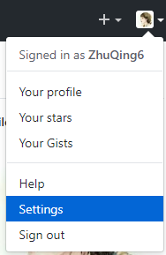
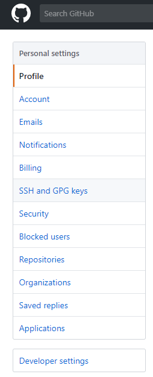
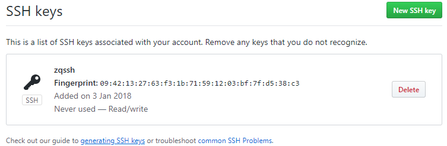
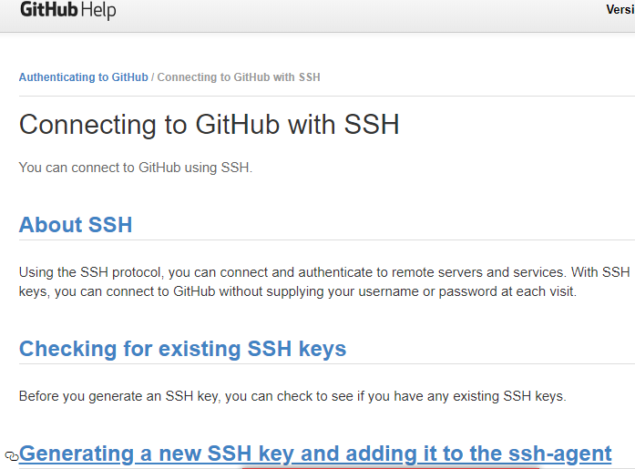
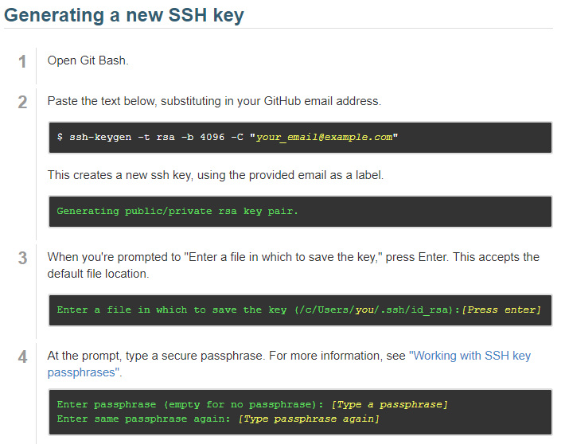
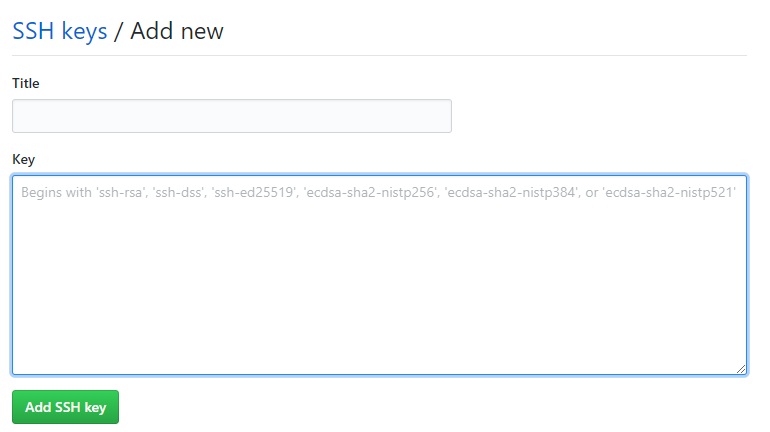
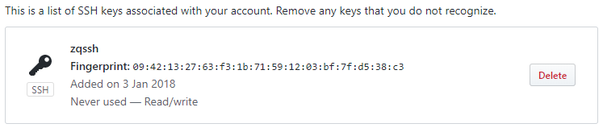
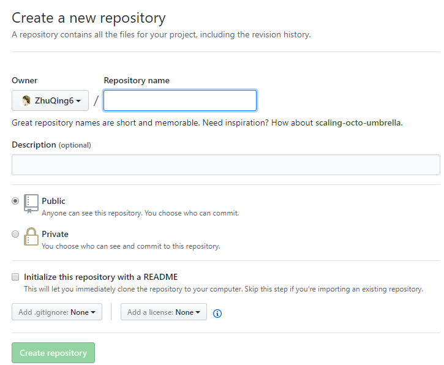
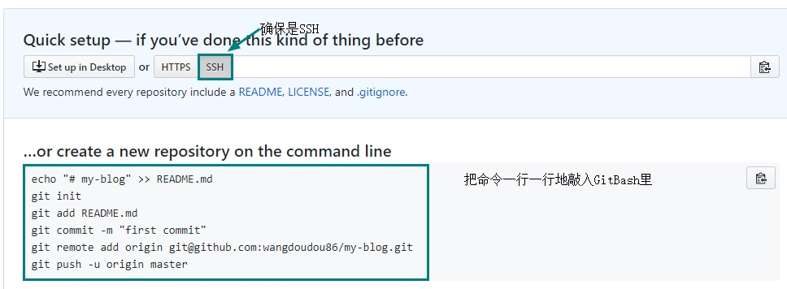

git config --global user.name 你的英文名
git config --global user.email 你的邮箱
git config --global push.default matching
git config --global core.quotepath false
git config --global core.editor "vim"
期间没有报错，即配置好Git了;下面进入VSCode与GitHub连接配置
打开GitHub，依次点击Settings——SSH and GPG keys——generating SSH keys——Generating a new SSH key and adding it to the ssh-agent——复制选中的命令到GitBash，点击3次回车，得到一个泡泡的样子说明成功;
在GitBash里再输入命令:cat ~/.ssh/id_rsa.pub,回车,得到一大段英文,复制这段英文！
以上步骤可参考以下图示:
    回到GitHub中粘贴复制下来的一段英文，然后add即可！
 由于个人是此情况也大概说一下吧！
找到.ssh文件(一般都在c盘的用户文件夹下,即C->用户->.ssh->id_rsa.pub),id_rsa.pub里即为已经生成的密钥,然后复制里面的所有内容至github中粘贴add即可！
注意是SSH链接
 新建一个目录,用于存放文章,建好后,右键点击Git Bash Here,就直接到了我们新建的这个目录里,再把上图的命令一行一行地粘贴到GitBash里运行即可！
下次编写代码时，直接用vscode打开该文件夹修改推送即可！